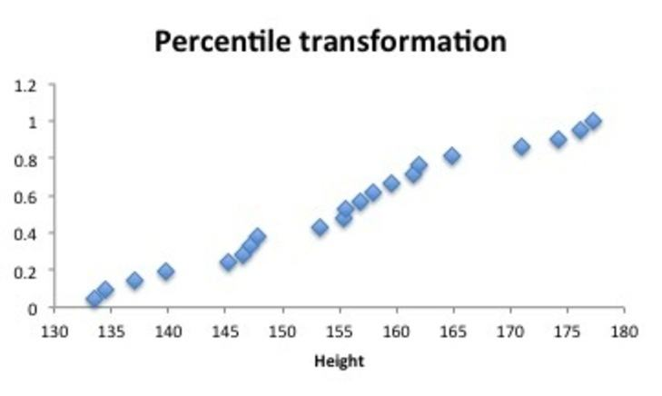
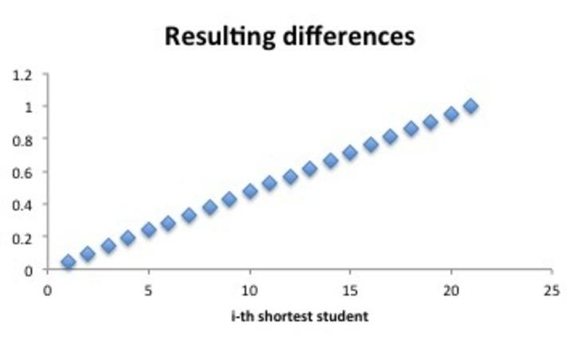

Techniques exist for us to scale data to the appropriate ranges for easier analyses.
Very often in data measuring different things will have different ranges. An example of this might be that the height of people will have a different range of values than weight.
The simplest and most common technique we might employ to ensure that variables taking values over different ranges can be aggregated is to apply scaling transformations.
To get all values to the interval we can use:
This is sometimes referred to as feature scaling.
Standardisation
In statistics you will also have come across the idea of standardisation or -scores.
Where is the standard deviation.
- This is an appropriate transformation if our data all follow a normal distribution but with different means and standard deviations.
- We could then similarly transform to the unit interval as we did previously.
Assuming there are no extreme outliers, one transformation that in most cases will allow normally distributed data to be scaled to the unit interval is:
The multiplying the usual standardisation formula will first scale the data so that of the data should fall between -0:45 and 0:45 (three standard deviations) and then adding will shift the interval to .
Normalisation
Both of these transformations can be considered as a kind of normalisation. However there are other options too.
Rank-scaling:
- We might want the data to properly reflect percentiles or quartiles.
- The final score in year 12 used as a basis for applying to universities uses this approach. Essentially, the students’ combined study scores are used to put them in order, and then a percentile score is allocated so that a score of means that a student scored better than of all students.

Percentile transformation

Resulting differences
Activity
Import the volley.txt data from Week 3 and apply:
- Feature scaling to column 1:
V[,1] = (V[,1]-min(V[,1]))/(max(V[,1])-min(V[,1]))
- Normalisation to column 2:
V[,2] = (V[,2]-mean(V[,2]))/sd(V[,2])
Ensure that you plot those variables on their own and versus other columns before and after applying the transformations to see the changes.